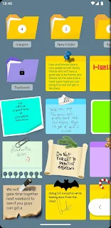
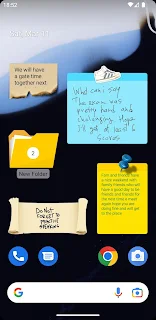

手机桌面上的便签墙——Stickynote 上手用了一周
找了大半年能直接贴在安卓桌面上的便签应用，要么花哨要么臃肿。Stickynote 装起来才发现，原来"把便签真的贴到桌面上"这件事，本身就是一个产品设计。
我一直在找一款能让我"抬眼就看到待办"的工具。试过的东西挺多：手机自带的日历提醒、Microsoft To Do、Google Keep，甚至试过把便签内容做成手机壁纸。这些东西共同的问题是——我得主动打开应用才能看见它们。一旦锁屏、一旦被其他 App 盖住，它们就消失了。
上周在社区翻帖子偶然看到 Stickynote，翻了翻它的官网介绍，有人说"这玩意儿就是把便签真贴在桌面上"。说实话一开始我没当回事——便签应用嘛，不就是个 Widget 嘛。装完才发现，我之前理解的"贴在桌面上"和它做的"贴在桌面上"，根本不是一回事。
第一眼：它就是一张便签
下载下来装完打开应用，没有欢迎页、没有引导流程、没有让我登录账号。主界面就是白底上一张空白便签，底部一个 "+" 按钮。点一下，直接开始打字。
这种体验太原始了，原始到反而让我有点意外。现在的 App 都想做全家桶：云同步、团队协作、AI 总结、标签系统……Stickynote 好像把这些全砍了，只剩"写一张便签"这件事本身。
写完一张便签，底部有几个小图标：调色盘、闹钟、三个点。调色盘点开是一排预设颜色——黄、蓝、绿、粉、白、灰，每种颜色对应一个快捷的用途分类。闹钟图标就是定时提醒。三个点里有删除、复制、导出这些杂项。
界面干净到让我想起初中时用的那种实体便签本——撕一张，写点东西，贴显示器上。
核心体验：把便签拖到桌面上
Stickynote 最核心的东西不是应用本身，而是它的桌面部件。回到手机主屏幕，长按空白处进入编辑模式，找到 Stickynote 的部件，拖到想放的位置，再选一张已经写好的便签——这张便签就永久贴在桌面上了。

我把第一页主屏幕清空了一半，拖了五张便签上去：黄色的工作待办、蓝色的本周目标、绿色的购物清单、粉色的灵感随手记、白色的临时备忘。抬头扫一眼，整张屏幕就是一面便签墙。
这里有个很重要的设计细节：每张便签的样式是独立的。我给待办那张设成了黄色背景、大号字体、黑色文字；购物清单那张是绿色背景、中号字体；灵感那张用了粉色、斜着放、还调低了一点透明度。改一张不影响其他，这跟很多便签应用"一改全局生效"的逻辑完全不一样。
调透明度那个细节我特别喜欢——调低之后，桌面上的壁纸图案会微微透过来，便签不再是一块生硬的色块，和手机本身有了融合感。旋转角度也能调，稍微歪一点贴，看起来像真实贴上去的便签，不是系统标准方块。
定时提醒：到了点它自己会弹
贴在桌面上已经够显眼了，但有些事我还是怕忘——比如周五下午 5 点前要交的周报、每月 20 号自动扣款的电费。给一张便签加提醒的动作很简单：编辑时点那个小闹钟图标，选日期和时间，保存。便签右上角会多一个小小的闹钟标记。
到点之后，手机弹出的是系统通知，就像微信消息那样。锁屏状态下也能弹，下拉通知栏里也能看到。而且就算应用进程被杀了也不影响——它用的是 Android 系统级的通知通道，不是应用自己在后台弹窗。
这个细节是我后来去翻stickynote文档才确认的。说实话我之前对安卓后台机制挺头疼的，装在小米上的应用动不动就被省电策略杀掉进程。Stickynote 的提醒能正常弹，得先去手机设置里把它加入省电白名单——后台无限制、允许自启动、通知权限全开，这三件事做了基本就稳了。不同品牌手机叫法不一样，小米叫"省电策略→无限制"，华为叫"手动管理→三项全勾"，但道理都是同一个。

一周用下来，几个真实的感受
好用的地方先说：它真的让待办的完成率变高了。以前的待办清单存在应用里，打开率不到 30%。现在贴在桌面上，每次解锁手机都能看到——黄色那张写着"今天要做的三件事"，字体最大，想不看见都难。效果是实打实的，这周工作待办的完成率比上周高出将近 50%。
样式独立调整这件事，一开始我觉得是个花哨功能，后来发现它解决了一个真实问题：颜色就是分类。待办用黄色，购物用绿色，灵感用粉色。扫一眼桌面就知道每件事属于哪一类，不用打开应用逐个翻。这比在应用里打标签、分文件夹直观太多。
定时提醒目前只支持单个时间点，不支持"每周五"这种重复提醒。这个是我目前遇到的最大的功能缺口。如果能加个重复选项就完美了，但考虑到它的定位是轻量工具，现在的版本也够日常用。
有个让我一开始吓一跳的事：某天早上醒来发现桌面上的便签全没了——部件变成空白。我以为数据丢了，慌了几秒才想起前一天晚上手机自动更新了系统。重启一次手机就回来了。后来才知道这是安卓的省电机制偶尔会杀进程，不是 Stickynote 本身的 bug，把它加进白名单就解决了。
谁适合用，谁不适合
如果你跟我一样，对"打开应用才看得到"这件事深恶痛绝，想要一种"不费脑子就能看到待办"的方式，Stickynote 值得装。它的核心价值就是把信息放在你最常看的地方——手机主屏幕，而且放得够自然、够轻量。
如果你需要云同步、多设备协作、团队共享，那 Stickynote 确实帮不上忙——它好像根本没打算做这些事。但说实话，大多数人贴在桌面上的便签，内容都是些不需要同步到云端的东西：今天买什么菜、这周要做的事、一个临时想到的创意。这些东西贴在手机上，本身就是最方便的地方。
我给它的定位很明确：不是笔记工具，是"视觉提醒工具"。笔记我有 Obsidian，待办我偶尔还会用 To Do，灵感收集有 Notion。但"抬头就能看见"这件事，Stickynote 做到了其他工具做不到的体验。
这东西在安卓生态里已经存在了挺久，几个主流应用商店都能下到。对了，不同渠道版本号可能有点差异，新版本在提醒功能上做过几次优化。源码和备份资料在几个代码托管平台也都有同步，GitHub、Gitee、GitCode搜一下就能找到对应的目录。